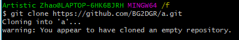
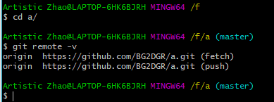
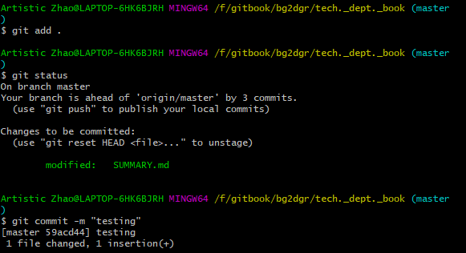
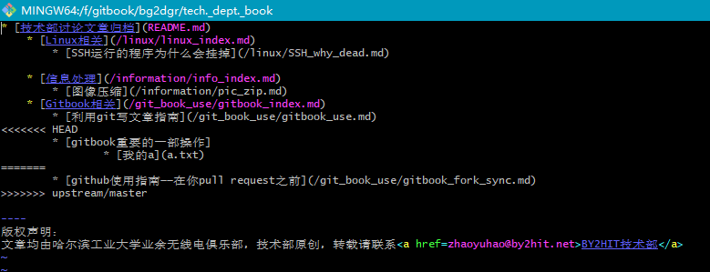
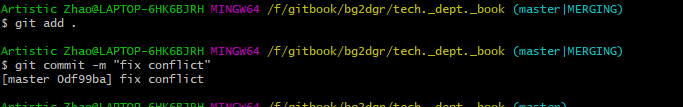
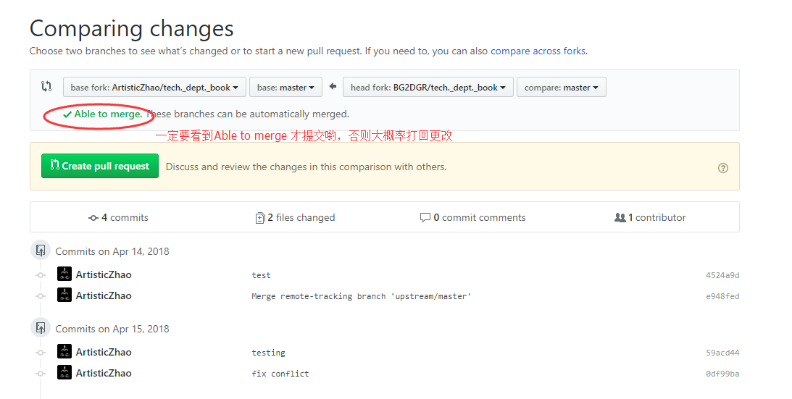

github使用指南——在你pull request之前（如何同步你fork的库）
作者：BG2DGR
合作写书
假定这篇文章的前置文章，李雨桐同学的《如何用git写文章》已经完善了，大家都可以按照他的步骤写一篇新的文章了，且推送到自己的GitHub上面，但是gitbook是托管到BY2HIT的GitHub上面(BY2HIT)。想要你写的这篇文章发布，就需要向BY2HIT的Github发起pull request。
那么这样就会出现这样一个问题（李雨桐和陈功同学都遇到了这个问题）：在他们文章推送之前，三老师又更新了一篇文章，但是你本地的编写的环境是你fork的BY2HIT之前的GitHub，也就是说，三老师在更新自己的GitHub，又加入了文章之后（也可能是其他同学提交了文章），你的repo并没有跟着一同更新，这是你的pull request就好产生冲突（“conflict”）。如何解决呢？
保证你fork的仓库最新（syncing your fork）
GitHub实际上对应着git “远程仓库”的概念。（似乎隐约记得三老师曾经提过，新建一个repo要从GitHub新建然后，然后clone到本地进行开发）。而这个过程就是为了避免手动新建仓库（repo）的时候git init，需要自己添加位于GitHub的远程仓库。
新的命令，显示远程仓库
git remote -v
如下图
我新建一个文件夹a，并使用git init初始化一个git环境，最后使用git remote -v查看了git的远程库，结果返回是空，当然，因为从头到尾就没涉及到远程库的问题（笑😀）
强调： 在图中有美元符“$”开头的是输入的命令，没有的为回显
我在GitHub创建一个repo，起名叫a
clone到本地，并使用git remote -v查看远程库


没错，你看到了叫origin的远程库，且后方的括号里面的fetch push我们知道他们一个负责同步（fetch），另一个负责推送（push）。所以，如何同步你fork的“上游库”呢？
看到这你应该有思路了吧？
加入同步“上游库”
我在BG2DGR这个账号中fork了BY2HIT的repo,并克隆到本地
git clone https://github.com/BG2DGR/books.by2hit.net.git
查看远程库git remote -v
为了同步，我们需要把三老师的远程库添加为本地的“上游远程库”
git remote add upstream https://github.com/BY2HIT/books.by2hit.net.git
注意：upstream只是我给起的名字，就像origin 都可以随便起的
并查看远程库

同步库
经过上一步添加了upstream之后，我们在开发之前和之后都要同步一下，以保证没有pull request冲突的问题
git fetch upstream

这时候，一般来说，都会把上游库拉到本地的upstream/master分支（关于分支的概念我们之后再谈）
合并你的分支
经过上一步，上游库同步在upstream/master，我们希望它在我们的master当中，就涉及到分支的合并了。
如果你足够幸运，没有发生冲突的话
请确保你在你的本地master分支中，如果不在，使用git checkout master来切换你的分支
git merge upstream/master
（PS：为了演示，我在本地中新建了一个文件a.txt，并commit）
这时弹出一个文本
意思是说为这次merge添加提示信息，（其实git的合并分支实在主分支上再次产生一个commit，具体可见老米的ppt）
保持并关闭这个文本之后，
实际上，为了这个演示效果，三老师把写了一半的本篇文章commit并push上去（到ArtisticZhao的repo）。所以图中显示的这个更新（绿色的+ 和 红色的减号表示变更）就是这半篇文章。
这时，我的这次更改——新建一个文件“a.txt”就已经和上游库保证同步了。
悲催的事，你和上游库同时更改了同一个文件，产生了conflict（冲突）
在写gitbook这个项目中，最有可能的情况就是三老师写了一篇文章更新了SUMMARY.md这个目录描述文件，而你写了一篇新文章也更新了SUMMARY.md，这样就产生了conflict。
我模拟了一个常见情况，我新建了a.txt文件，并在SUMMARY.md中建立了到此文件的目录链接。 并提交

然后在提交到我的远程库之前，我进行了之前的操作，保证我的库和上游库保证同步，而上游库三老师也在SUMMARY.md中添加了这篇文章的目录链接。我BG2DGR更改了SUMMARY.md,三老师也更改了SUMMARY.md。这时，我执行merge会发生什么呢？
没错，在我们意料之中，git给我们报出了conflict。面对三老师和BG2DGR的同时修改，git懵逼了！
在这个时候git已经为你生成了冲突报告，我们查看一下SUMMARY.md这个文件

git在冲突的文件中同时显示了修改，并加以标注
你会看到我的提交在<<<<<<< HEAD和=======之间，
而三老师的代码在 ======= 和 >>>>>>> upstream之间。这时我既想保留自己的目录，同实也保留三老师的目录。
只需要我删除掉 “<<<<<<< HEAD” “=======“ ”>>>>>>> upstream“这三个标记，并且将代码调整至我想要的顺序和情况**
类似这样。
然后产生一个commit

这样如果commit成功了，就解决了这个冲突！（如果不成功就无法commit）
完成你的提交——pull request
最后你就可以使用
git push
更新到你的GitHub上（BG2DGR），并向三老师（ArtisticZhao）提交你的文章了。


一定是看到”Able to merge“才可以提交哟
否则三老师会被大家满是conflict的提交累坏的。
-- END(累死)
时间：2018.04.15 0：33
版权声明：
文章均由哈尔滨工业大学业余无线电俱乐部，技术部原创，转载请联系BY2HIT技术部 zhaoyuhao@by2hit.net